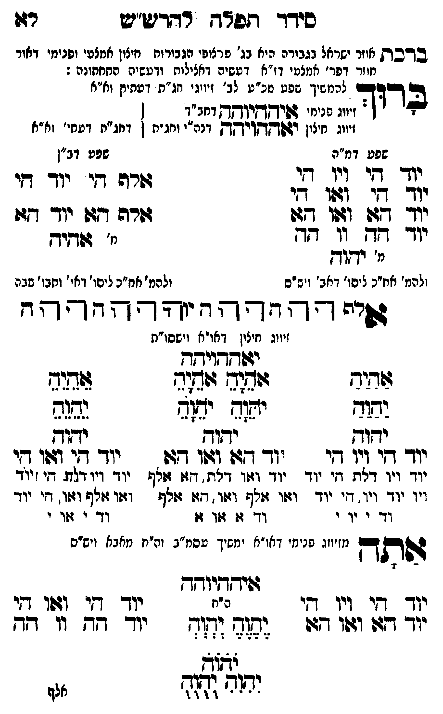

Neue Klartextfassung
■ ברכת אוזר ישראל בגבורה ■ [היא בג' פרצופי הגבורות חיצון אמצעי ופנימי דאור חוזר דפר' אמצעי דז"א דעשיה דכללות ורביעיה התחתונה:] ברוך [להמשיך שפע מכ"ע לב' זיווגי חג"ת דעתיק וא"א] [זיווג פנימי איההיוהה דחב"ד] [זיווג חיצון יאההויהה דכ"ח ותו"ח] [דחג"ת דעתי' וא"א] === טבלה === [טור ימין — שפע דמ"ה] יוד הי ויו הי יוד הי ואו הי יוד הא ואו הא יוד הה וו הה [מ' יהוה] [ולכת' חב"ד ליסוד דאבא ויש"ס] [טור שמאל — שפע דב"ן] אלף הי יוד הי אלף הא יוד הא [מ' אהיה] [ולכת' חב"ד ליסוד דאי' ותבו' שבה] === סוף טבלה === אלף ה הה ו וה יה יהוה הההה [זיווג חיצו' דאו"א וישסו"ת] יאההויהה === טבלה === [טור ימין] אַהַיַהַ יַהַוַהַ יהוה יוד הי ויו הי יוד ויו דלת, הי יוד ויו יוד ויו, הי יוד וד י וי י [טור אמצעי] אָהָיָהָ אָהָיָהָ יָהָוָהָ יָהָוָהָ יהוה יוד הא ואו הא יוד ואו דלת, הא אלף ואו אלף ואו, הא אלף וד א או א [טור שמאל] אֵהֵיֵהֵ יֵהֵוֵהֵ יהוה יוד הי ואו הי יוד ויו דלת, הי יוד ואו אלף ואו, הי יוד וד י או י === סוף טבלה === אתה [מזיווג פנימי דאו"א ימשך עסמ"ב ונרנח"י דחכמה ויש"ס] איההיוהה === טבלה === [טור ימין] יוד הי ויו הי יוד הא ואו הא [טור אמצעי] [ה"ח] יֶהֶוֶהֶ יְהְוְהְ יֹהֹוֹהֹ יִהִוִהִ יֻהֻוֻהֻ [טור שמאל] יוד הי ואו הי יוד הה וו הה === סוף טבלה ===
Original gegen neue OCR · Niqqud für Vergleich ausgeblendet
Original
■ ברכתK066-001 אוזר ישראל בגבורה ■ [היא בג' פרצופיK066-002 הגבורות חיצון אמצעי ופנימי דאור חוזר דפר'K066-003 אמצעי דז"א דעשיה דכללות ורביעיה התחתונה:] ברוך [להמשיךK066-004 שפע מכ"ע לב' זיווגי חג"ת דעתיק וא"א] [זיווגK066-005 פנימי איההיוהה דחב"ד] [זיווגK066-006 חיצון יאההויהה דכ"ח ותו"ח] [דחג"ת דעתי' וא"א] === טבלה === [טור ימין — שפע דמ"ה]K066-007 יוד היK066-008 ויו היK066-009 יוד הי ואו היK066-010 יוד הא ואו הא יוד הה וו הה [מ' יהוה] [ולכת' חב"ד ליסוד דאבא ויש"ס] [טור שמאל — שפע דב"ן] אלף הי יוד הי אלף הא יוד הא [מ' אהיה] [ולכת' חב"ד ליסוד דאי' ותבו' שבה] === סוף טבלה === אלף ה הה ו וה יה יהוה הההה [זיווג חיצו' דאו"א וישסו"ת] יאההויהה === טבלה === [טור ימין] אהיה יהוה יהוה יוד הי ויו היK066-011 יוד ויו דלת, היK066-012 יוד ויוK066-013 יוד ויו, הי יוד ודK066-014 י ויK066-015 י [טור אמצעי] אהיה אהיה יהוה יהוה יהוה יוד הא ואו הא יוד ואו דלת, הא אלף ואו אלף ואו, הא אלף וד א או א [טור שמאל] אהיה יהוה יהוה יוד הי ואו הי יוד ויו דלת, הי יוד ואו אלף ואו, הי יוד ודK066-016 י אוK066-017 י === סוף טבלה === אתה [מזיווגK066-018 פנימי דאו"א ימשך עסמ"ב ונרנח"י דחכמה ויש"ס] איההיוהה === טבלה === [טור ימין]K066-019 יוד הי ויו הי יוד הא ואו הא [טור אמצעי] [ה"ח] יהוה יהוה יהוה יהוה יהוה [טור שמאל] יוד הי ואו הי יוד הה וו הה === סוף טבלה ===K066-020
OCR · fehlbar
סידד תפדח רדדיש"ש רזו בדכקK066-001 אוזר ישראל נגביר ריא בנ' פרציפ.K066-002 הגבורות חיצון אמצעי ופנימי דאור חוזר (צןK066-003 אמצעי דז"א י([- דאצילות ודעשיה החחתונה : ם כלכם להמשיךK066-004 שפע מכ"ע לב' זיווגי חג"ח דעחיק וא"א בדוד. .K066-005 פנימי דויקקי"קךץ דחב"ד [ זיווג חיצין רצשךץד]זיחדק דנה"י וחג"ח ן דחג"ח דעתי' וא"א שפט דמ"ה שפט דג"ן יוךך ד[י ויו די רט אי יו- -י גב 2- (צ7 2. לצ' - (- 3 יוך דצו וגוו גש גזרה דג: יוד גו יודך גץ וו ד[- ז' שדיך מ' ודגוץ להמ' אח"כ ליסו' דאב' ויש"ס ולהמ' אח"כ ליסו' דאי' וחבו' שבה שיי -- -די- - י: גד - - - ד זיוגK066-006 חיצון דאו"א וישסו"ת ידשדדויח-ח זזדיד לללללל תנג יד יז( ימ(ש נשנת ידוד ידוד ידודK066-007 יוד דיK066-008 ויו גי יוך דג (זוו דש. יוך דן וגוו די יוך ויו דלת חזיK066-009 יוד ∅K066-010 יוד וזו דאת. זז זזלףשK066-011 יוד ויו דל די ייוד ויו יו- ויו. דיK066-012 יוד וצו זולף וזו . דז גזלף ' וזו וזל וזו. דיK066-013 יוד דד-K066-014 י יךK066-015 י וך 4: 704 זו וד-K066-016 י גוךK066-017 י י ימזי דאו"א י חשי ש לש אבא (ישי דפ[תדך מזיוזגK066-018 פנימי דאו"א ימשיך טסמ"ג וה"ח מאבא ויש"ס גשיחךיוךק י(ךך ד[י ויו (-י ר"ח יודך דזי 1041 דזי יך דז: וזזו 47: וג(- (1-K066-019 יוד -- יו' דד לא וטח [ת(- ו ו"ו אלףK066-020